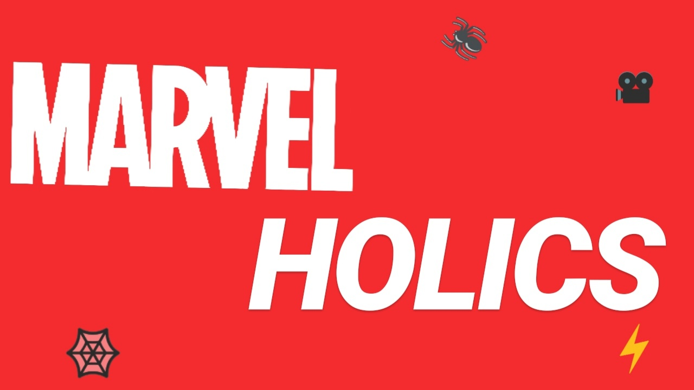
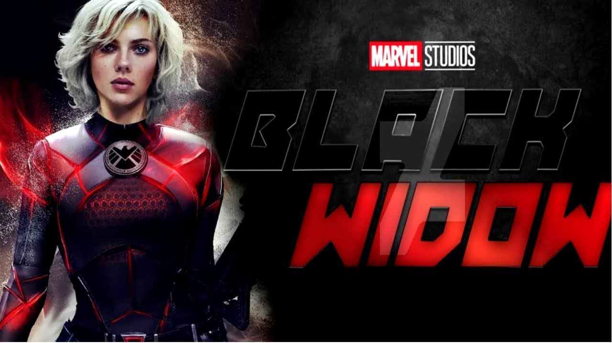
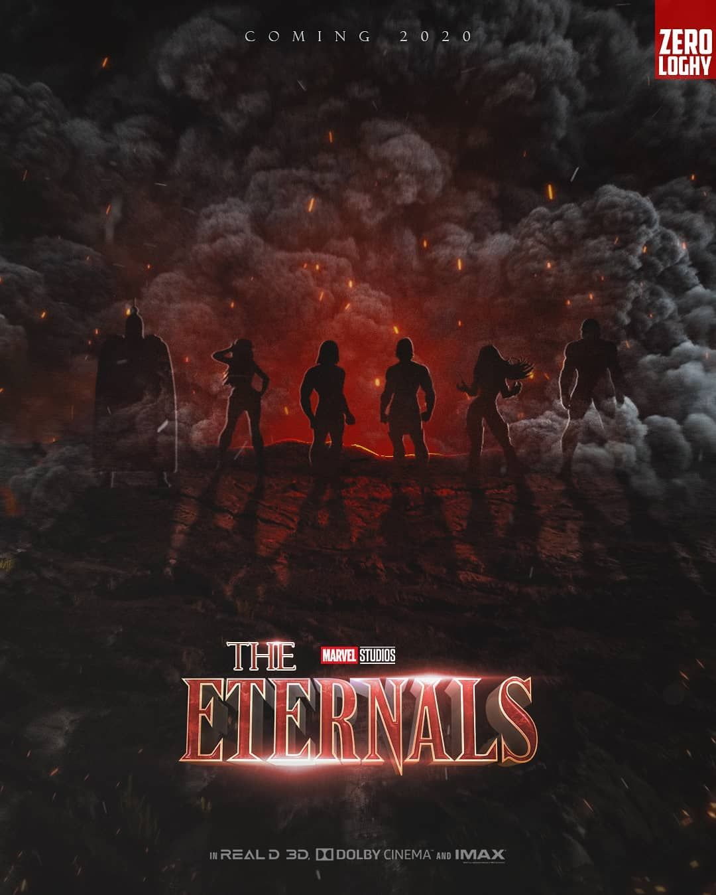
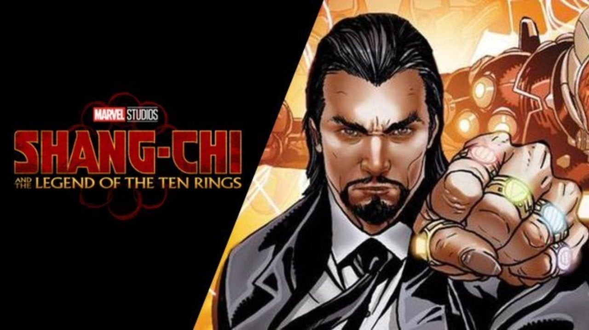
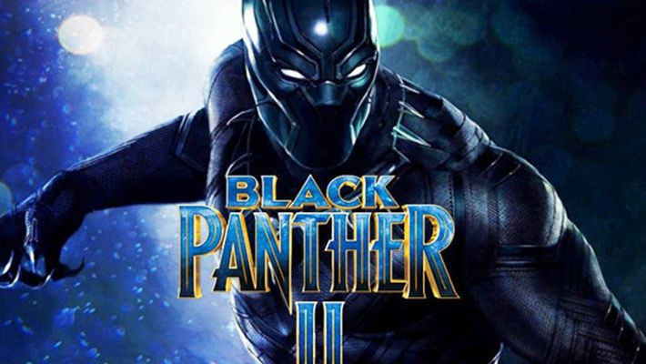

Welcome to our Universe
Get to know us...
Στα πλαίσια του προγράμματος #Code_like_a_girl η ομάδα μας ΒΔΖ δημιούργησε αυτή την σελίδα έχοντας στο μυαλό μας ένα site τύπου blog για τους φαν της Marvel. Αν ακούτε MCU και στο μυαλό σας αυτόματα παίζουν σκηνές με τους αγαπημένους σας ήρωες με background ήχο το τραγούδι τίτλων που υπάρχει σε κάθε ταινία της Marvel, συνεχίστε την περιήγηση γιατί βρίσκεστε στο σωστό μέρος!
Avengers Disassemble ):
Οι εντυπώσεις μας από το Endgame.
Nαι, είδαμε το Endgame. Και ναι, κλαίγαμε σίγουρα τα τελευταία δέκα-και όχι μόνο-λεπτά...
Ανερχόμενες Marvel ταινίες
Γνωρίζουμε ότι είστε ενθουσιασμένοι για τις νέες κυκλοφορίες όσο κι εμείς!

Black Widow- 2020

The Eternals- 2020

Shang- Chi- 2021

Doctor Strange in the Multiverse Madness- 2021

Thor: Love and Thunder- 2021

Black Panther II- 2022
Our friendly neighborhood Spiderman is leaving the MCU
Φυσικά από την συζήτηση δεν μπορεί να λείπει το συνταρακτικό νέο που μάθαμε πριν από λίγες βδομάδες. Ναι, είναι γεγονός οι φαν της MARVEL θα πρέπει να αποχαιρετήσουμε το αγαπημένο μας Spiderman αφού από εδώ και στο εξής είναι πολύ πιθανό να μην εμφανίζεται σε καμία από τις μελλοντικές ταινίες του MCU και το κινηματογραφικό μέλλον του χαρακτήρα παραμένει στον αέρα. Αξίζει να σημειωθεί ότι ο Tom Holland, που υποδύεται τον Spider- Man, και ο σκηνοθέτης, Jon Watts, έχουν υπογράψει για ακόμη δύο ταινίες με τη Sony. Το γεγονός αυτό βέβαια δεν αποκλύει την τεράστια επιτυχία της νεότερης ταινίας του καλοκαιριού της MARVEL Spiderman: Far from Home η οποία μέχρι και τον Σεπτέμβριο έχει μαζέψει συνολικά 390 εκατομμύρια δολλάρια στο BOX OFFICE.
Get to know our favorite cast even better
Fun Facts:
- Με το τέλος της ταινίας «Spider-Man: Μακριά απ’ τον τόπο του» η Marvel μπήκε σε μια νέα εποχή, χωρίς τον ήρωα που ξεκίνησε τον κινηματογραφικό της σύμπαν, τον Iron Man του Ρόμπερτ Ντάουνι Τζούνιορ.
- Πολλοί περίμεναν ότι ο ήρωας, που πέθανε στο φινάλε της ταινίας «Εκδικητές: Η Τελευταία Πράξη» θα έκανε μια τελευταία εμφάνιση στην ταινία του Σπάιντερμαν, έστω και σε φλας μπακ ή όνειρο, αλλά απογοητεύτηκαν.
- Όμως τώρα μια πηγή μέσα από τη Marvel αποκαλύπτει ότι ο Ρόμπερτ Ντάουνι Τζούνιορ θα επιστρέψει μέσα από μία σειρά της πλατφόρμας streaming Disney+. Σύμφωνα με το We Got This Covered, τα αφεντικά της Marvel σχεδιάζουν μια σειρά για την υπερήρωα Ironheart, που στα κόμικς συνεχίζει το έργο του Iron Man. Η ηρωίδα, το αληθινό όνομα της οποίας είναι Ρίρι Γουίλιαμς εμφανίζεται στο προσκήνιο όταν ο Τόνι Σταρκ / Iron Man είναι σε κώμα, και εκπαιδεύεται από ένα πρόγραμμα τεχνητής νοημοσύνης που μιλάει με τη φωνή του Σταρκ.
- Η Brie Larson ήταν κάποτε τραγουδίστρια και είχε δημοσιεύσει ένα δικό της τραγούδι.
- Ο Chris Evans απέρριψε αρχικά τον ρόλο του Captain America.
- Η Zoe Saldana είναι η πρώτη ηθοποιός που παίζει σε δύο ταινίες που ξεπερνούν τα 2 δις δολλάρια.
- Ο Mark Ruffalo είχε όγκο στον εγκέφαλο και παρόλο που χειρουργήθηκε έχει μείνει πρόβλημα στην ακοή του.
- Το 2006 ο Chris Hemsworth είχε πάρει μέρος στο Dancing with the stars της Αυστραλίας.
- Στην αρχη, ο Chadwick Boseman ήθελε να γίνει σκηνοθέτης και ξεκίνησε να ασχολείται με την ηθοποιία μόνο για να καταλάβει καλύτερα την σχέση μεταξύ σεναριογράφου, σκηνοθέτη και ηθοποιού.
Πατήστε εδώ για ακόμα πιο διασκεδαστικές και συναρπαστικές πληροφορίες!